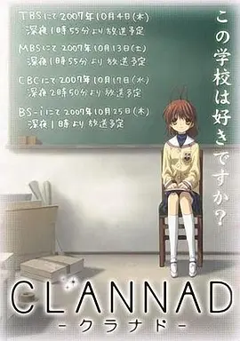

哆啦a梦
小学生静香、大雄、小夫和胖子胖虎是四个最亲密的伙伴，说是亲密伙伴，是因为他们四个经常在一起玩，但小夫和胖子胖虎经常欺负大雄。而大雄天生就是被人欺负的对象，他胆小内向，经常被小夫和胖虎欺负得大哭着跑回家。不过，大雄家里住着来自未来的机器猫——哆啦A梦，哆啦A梦经常会看到大雄被欺负忍不住拿出一些未来世界的“法宝”帮助他，不过大雄大多数都会滥用这些“法宝”去作弄人，最后经常导致局面不可收拾，笑料百出……
anime list
小学生静香、大雄、小夫和胖子胖虎是四个最亲密的伙伴，说是亲密伙伴，是因为他们四个经常在一起玩，但小夫和胖子胖虎经常欺负大雄。而大雄天生就是被人欺负的对象，他胆小内向，经常被小夫和胖虎欺负得大哭着跑回家。不过，大雄家里住着来自未来的机器猫——哆啦A梦，哆啦A梦经常会看到大雄被欺负忍不住拿出一些未来世界的“法宝”帮助他，不过大雄大多数都会滥用这些“法宝”去作弄人，最后经常导致局面不可收拾，笑料百出…… 结束了与新短笛大魔王的天下第一比武大会，我们的地球迎来了长达五年的和平时期，数次拯救世界的孙悟空（野泽雅子饰）在此期间与琪琪走入婚姻殿堂，并生下了可爱的儿子悟饭。然而更大的危机一波又一波向勇敢的战士们袭来。打头阵的赛亚人拉迪兹，意外揭开了悟空的身世。宿命的对手贝吉塔则让悟空真正见识到高手的存在。在此之后，那美克星、弗利札、超级赛亚人、人造人、未来少年、魔人布欧。精彩戏码接连上演，拉开了龙珠Z的宏大篇章…… 在熙攘的人类世界里，很多妖精隐匿其中，他们与人类相安无事地生活着。猫妖罗小黑因为家园被破坏，开始了它的流浪之旅。这场旅途中惺惺相惜的妖精同类与和谐包容的人类伙伴相继出现，让小黑陷入了两难抉择，究竟何处才是真正的归属？ 新的学期开始了，外表凶狠但内心纯良的少年高须龙儿（间岛淳司配音）决心利用重新分班的机会一扫往日同学对他的误解。更让他高兴的是，自己即将和暗恋了一年有余的栉枝实乃梨（堀江由衣配音）成为同班同学。除此之外，还有多年的死党北村祐作（野岛裕史配音）陪伴，一段崭新的高中生活展现在了龙儿的眼前。少女逢坂大河（钉宫理惠配音）的出现吸引了龙儿的目光，并不是因为此人傲娇腹黑的别扭个性，而是因为在偶然中，龙儿发现，大河居然暗恋着自己的好友祐作。在相互坦白了暗恋对象后，龙儿和大河决定结成统一的恋爱战线，利用相互的帮助来完成各自的恋爱蓝图。但现实并没有想象的那么简单，在重重的误会和波折之中，两人似乎对对方都产生了超越友谊的情感。  故事发生在一个小镇上，冈崎朋也（中村悠一配音）是光坂高中在校生，因为家庭原因他一直过着浑浑噩噩的生活。他不参加任何社团活动，唯一的朋友是春原阳平（阪口大助配音）。 某天的上学途中，在樱花飞舞的坡道上，他邂逅了一名少女——古河渚（中原麻衣配音），从此他的生活发生改变。渚因病休学一年，重返校园的她对周围环境感到相当不适应。她想加入戏剧部，然而戏剧部早已休部。朋也决定帮助她一起开展戏剧部的活动，二人关系变得越发亲密。随后不久朋也在图书馆中结识了一名天才少女一之濑琴美（能登麻美子配音）。 丁丁（杰米·贝尔JamieBell配音）和白雪的故事可以说是影响了不止一代人。在史蒂文·斯皮尔伯格和彼得·杰克逊的努力下，丁丁的故事终于被搬上了大银幕。 《七彩卡通老夫子》描述老夫子及大蕃薯向一位武术高手拜师学艺的故事。片中描述老夫子遇见一帮不良份子，向一位武术高手挑战，而激发起老夫子要拜师学艺。而老夫子，大蕃薯及秦先生亦不其然地牵涉到一宗劫案里，造出了不少搞笑及戏剧性的变化。最后他们都安然无恙，那劫匪们当然难逃法网呢！ 住在天空与海洋辉映的城镇“藤泽”的梓川咲太，就读高中二年级。他与既是学姐又是恋人的樱岛麻衣所度过的令人雀跃的日常，随着初恋对象牧之原翔子的出现而改变。 平凡的中学生鹿目圆（悠木碧配音）有一个美满的家庭，在生活中她是个性格温顺又有爱心的好孩子。转学生晓美焰（斋藤千和配音）的出现打破了小圆平静的生活，这个性格酷酷又体弱多病的黑长直少女似乎对小圆有着什么难言之隐。命运中的相遇出现了，小圆在路边救下了一只浑身是伤的奇怪动物，没想到这只动物居然会说人类的语言。它告诉小圆它的名字叫丘比（加藤英美里配音），并且提出了一个特殊的要求，它希望小圆能够和它签订契约成为魔法少女。 本片是以神木高中“古典部”为舞台，围绕四个部员折木奉太郎、千反田爱瑠、福部里志、伊原摩耶花展开的校园推理剧。神木高中一年级生折木奉太郎是一个“节能”主义者，他信奉“不必要的事不做，非做不可的事就尽快解决”，过着“灰色”的高中生活。不参加任何社团的他，却因为姐姐的拜托而加入了濒临废部的“古典部”。在古典部他结识了好奇心旺盛的千金小姐千反田爱瑠，国中好友福部里志、伊原摩耶花也相继加入古典部。 本作主人公冈部伦太郎（宫野真守配音）是个患有严重中二病的大学生，自称为“凤凰院凶真”的他和伙伴们组成了“未来发明研究所”，在位于秋叶原的一个简陋实验室内进行各种古怪发明和调查。2010年7月28日这天，冈部和青梅竹马真由理（花泽香菜配音）一同去了科学讲义会场，在那里，他们遇见了天才少女牧濑红莉栖（今井麻美配音）。让人意想不到的事情发生了，冈部在会馆楼道内听到一声惨叫，他闻声而至，发现了倒在血泊中的牧濑。冈部用手机短信将这件事告诉好友桥田至，这个举动，让世界都颠覆了。实验室里那个所谓的“未来道具”，竟然真的可以左右世界的进程，冈部自此成了孤独的观测者。 NHK総合にて2023年放送決定！ 齐木楠雄（神谷浩史配音）是一名十六岁的高中二年级学生，从一出生开始，他便是一名全能超能力者，几乎掌握了一切叫得上名字的超能力，这表面上让人无比羡慕的特质却让齐木楠雄的生活陷入了无聊的绝望之中，因为他几乎不用付出任何的努力，便可以为所欲为。于是，齐木楠雄封印了自己的超能力，致力于做一个默默无闻的普通人。 工藤新一是全国著名的高中生侦探，在一次追查黑衣人犯罪团伙时不幸被团伙成员发现，击晕后喂了神奇的药水，工藤新一变回了小孩！新一找到了经常帮助他的阿笠博士，博士为他度身打造不少间谍武器。为了防止犯罪团伙对他进行报复，新一决定隐姓埋名，暗中追查他们，希望能得到解药。一日，新一的女友毛利兰来到了阿笠博士的家寻找男友的下落，被小兰撞见的新一情急之下编造了自己名叫江户川柯南，随后柯南寄居在了小兰家。小兰的父亲毛利小五郎是一名私家侦探，新一可以籍着和他一起四出办案一起追查黑夜人的下落。柯南在小学认识步美等小学生，他们一起组织了一个少年侦探团，向罪犯宣战！ 表面上看来，东云名乃（古谷静佳配音）是一个外表可爱又有点天然呆的黑发女孩，可是，她背后醒目的发条暴露了她的真实身份——由博士（今野宏美配音）所改造的少女机器人。虽然对于自己背后的发条感到十分自卑，但博士总是以其非常可爱为由拒绝帮助名乃进行改造。 据情报师消息：《#无职转生～到了异世界就拿出真本事～#》第二季&第三季制作决定！ 故事发生在秀知院学园之中，只有在智商上非常顶尖的少年少女们才能够获得进入这所学园学习的资格，而在学园的学生会中，更是汇聚了就算在这间学园里也能算得上是数一数二的精英们。白银御行（古川慎配音）是学生会的会长，虽然出生在贫穷的家庭之中，但他凭借着自己的极端努力在学生中脱颖而出。同样优秀的，还有副会长四宫辉夜（古贺葵配音），虽然各方面都属拔尖，但她的性格却给人一种冷淡的感觉。实际上，白银和四宫在情感上相互吸引着，只是他们谁都不愿意首先迈出第一步，而是想方设法逼迫对方行动，一转眼半年过去了，两人的关系可谓是毫无进展，这可怎么办呢？
哆啦a梦

龙珠

罗小黑

虎与龙
Clannad

丁丁历险记

老夫子

青春期猪头少年不做怀梦少女的梦

魔法少女小圆

冰菓

命运石之门

进击的巨人

齐木楠雄的灾难

柯南

日常

无职转生

辉夜大小姐想让我告白

国家的丰饶、麾下勇者的数量、以及国王本人如何像勇者一般强大，这些要素的综合排名，便是所谓的“国王排名”。主人公波吉是国王排名第七名的伯斯王治下王国的第一王子。但是波吉却生来耳不能闻，贫弱到挥不动剑。